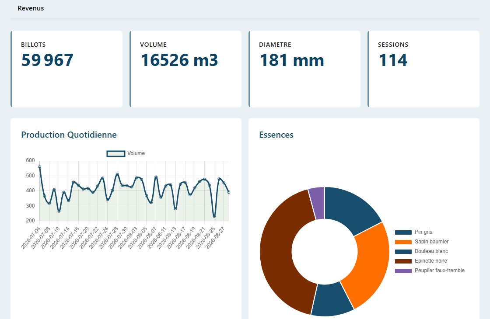
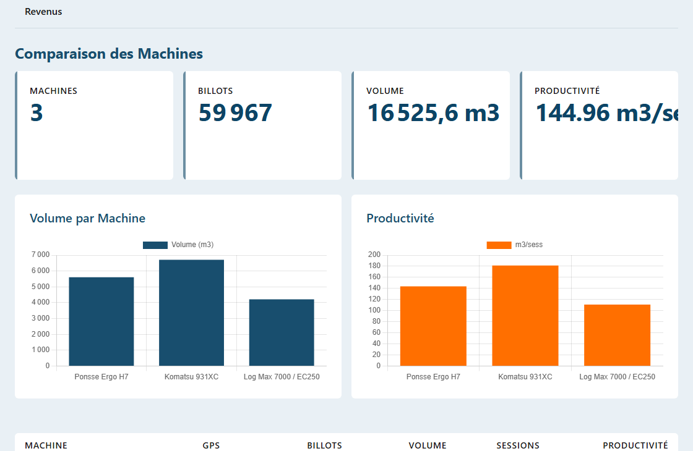
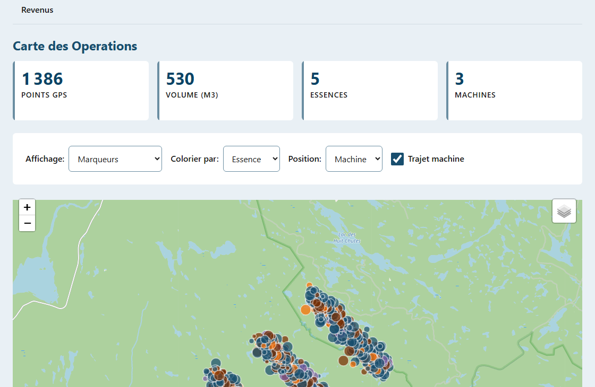
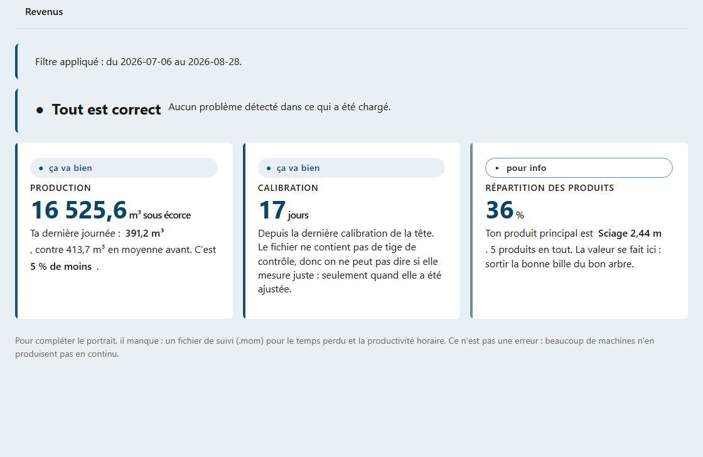
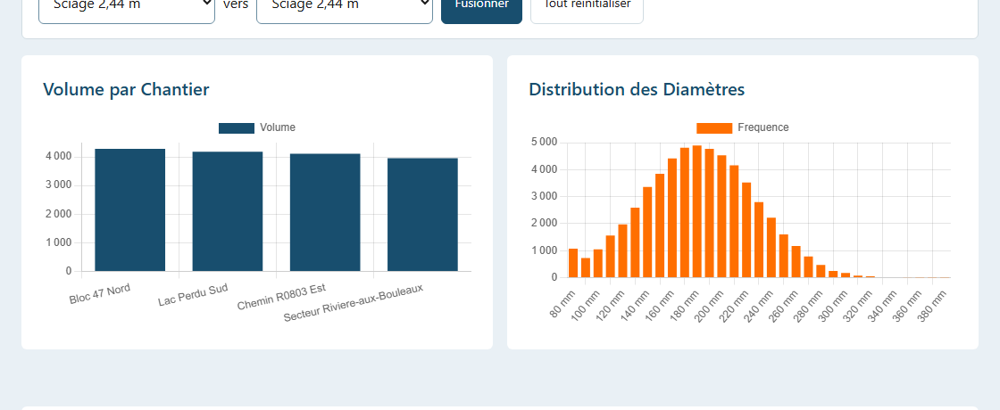

Les données de vos têtes d'abattage, toutes marques confondues, dans un seul tableau de bord
Demander une démoChaque tête d'abattage mesure ce qu'elle récolte, tige par tige : essence, diamètre, longueur, volume, opérateur, moment de la coupe. Ces mesures restent presque toujours dans la machine, dans un format que personne n'ouvre au bureau.
SyncLogix va les chercher directement dans les bases de données embarquées de vos machines et les rassemble dans un seul tableau de bord. Komatsu, Ponsse, Log Max et John Deere se retrouvent dans la même vue, avec les mêmes essences et les mêmes unités, même si chaque constructeur les nomme à sa façon.
Vous n'avez rien à ressaisir. Vous déposez les fichiers de vos machines, et le portrait de la récolte apparaît.

Chargez autant de machines que vous voulez. SyncLogix les met côte à côte : volume, nombre de billots, séances de travail et productivité en mètres cubes par séance.
C'est la comparaison que vos rapports de fin de mois ne donnent pas. Pourquoi une abatteuse sort 181 m³ par séance et l'autre 110, sur les mêmes blocs, avec les mêmes essences.

Filtrez par période, par machine, par opérateur, par essence ou par chantier. Tous les écrans suivent.
Volume par machine, par chantier, par essence, par produit et par opérateur. Production quotidienne et évolution sur toute la période. Volume moyen par tige.
Distribution des diamètres et des longueurs sur l'ensemble de la récolte. Comparez les longueurs réellement produites à vos longueurs cibles d'usine, avec vos propres tolérances.
Le journal des ajustements de diamètre et de longueur, machine par machine, avec la date du dernier contrôle. Vous savez depuis combien de temps une tête n'a pas été vérifiée.
Entrez vos prix par produit et le volume récolté devient une valeur, ventilée par machine et par produit. Le prix moyen au mètre cube suit automatiquement.
Quand vos machines enregistrent leur position, SyncLogix place chaque tige sur la carte et trace le parcours de la machine dans le bloc.
Colorez les points par essence ou par produit pour voir d'un coup d'œil comment le peuplement se répartit sur le terrain, et où votre machine a réellement travaillé.

Vous n'avez pas à éplucher les graphiques pour trouver le problème. À l'ouverture, un centre d'alertes analyse ce que vous venez de charger et vous dit en une phrase ce qui va bien et ce qui mérite un coup d'oeil.
Il vous dit aussi ce qu'il ne peut pas savoir. Si vos fichiers ne contiennent pas de tige de contrôle, il vous le dit plutôt que d'afficher une précision inventée. Vous savez toujours sur quoi repose le chiffre que vous regardez.

Une machine écrit « Pitoune », l'autre écrit « Pâte ». Sans correction, votre rapport compte deux produits là où il n'y en a qu'un.
SyncLogix regroupe automatiquement les libellés équivalents et vous laisse fusionner à la main ceux qu'il n'a pas reconnus. Vos totaux par produit sont justes avant même que vous ouvriez le premier graphique.

Toutes nos applications sont infonuagiques et synchronisées entre elles. ForestLogix est le coeur du système : chaque application lui parle, et les applications se parlent entre elles, dans les deux sens.
Ce que vos équipes saisissent sur le terrain remonte dans ForestLogix. Ce que SyncLogix lit dans vos machines s'y retrouve aussi, à côté des traces GPS, des feuilles de temps et des bons de travail. Vous n'exportez pas d'un logiciel pour importer dans l'autre : c'est le même ensemble.

Du côté des machines, SyncLogix lit les données de production des principales marques présentes en forêt québécoise :
Deux voies d'accès, selon ce que votre machine vous donne :
Du côté du bureau et du terrain, il est intégré à l'ensemble de l'écosystème ForestLogix :

Découvrez comment SyncLogix peut éliminer les pertes de données et accélérer vos opérations.
Contactez-nous Demander une démo